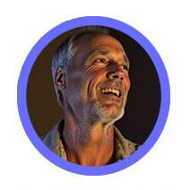

Availability: Seeking Long-term Regenerative Ranch Steward or Caretaker Role
Location: Available for Relocation
Over two decades of experience in comprehensive property management, regenerative agriculture, and earth stewardship.
Proven track record of transforming properties while implementing sustainable practices and innovative solutions.
20+
Years Property Management
15+
Years Permaculture Expertise
6+
Regenerative Land Stewardship
🔧
MacGyver Problem-Solver
💧
Advanced Water Systems Expert
🏡
Strategic Estate & Ranch Operations

2024/2025
Current Vision & Recent Achievements
Seeking Regenerative Ranch Steward or Caretaker Role
Available for Relocation
Actively pursuing long-term role as regenerative ranch steward or estate, camp caretaker while completing advanced certifications and developing comprehensive ranch development plans.
Developed Ranch Vision Worksheet using Simon Sinek methodology (link to pdf)
Pioneered the HORSEBIKE Ecosystem, a revolutionary electric platform transforming regenerative land management through modular tools for fencing, solar charging, and biochar seed bomb deployment (link to pdf)
Key Projects
Spotted Frog Ranch Plan
Comprehensive 2-year regenerative ranch startup plan with complete strategic framework for ranch development. (link to pdf)
Trout Stalker Ranch
Developed a mapping plan for a 1,500-acre High-Altitude Ranch, including paddock mapping and cover cropping mapping. View 4 images
"Bruce's vision for regenerative ranching combines practical expertise with innovative thinking, creating sustainable solutions for modern agricultural challenges."
- Ranch Development Consultant
2023-2024
Facilities Manager
Canon Blanco Ranch - Kroenke Ranches
New Mexico
As Property Manager at Canon Blanco Ranch, spearheaded comprehensive cleanup and restoration and repair of estate and facilities operations for the principals' 14,000 sq-ft Hacienda on a 90,000 acre Ranch in New Mexico.
Spearheaded comprehensive rehabilitation of all estate facilities, including complex irrigation and structural repairs.
Implemented comprehensive wildfire mitigation strategies, including small-scale biochar production.
Restored and expanded neglected fruit orchard operations, promoting biodiversity and chemical-free care.
Ensured luxury estate was consistently guest-ready, curating exceptional VIP experiences.
"The ranch looks the best it's ever looked. Bruce's attention to detail and comprehensive approach to ranch management has transformed our operations."
- Kroenke Ranches Management
2019-2023
Estate Ranch Manager & Vineyard Steward
Rogue Kiwi Ranch
Oregon
Comprehensive management of 7,500 sq ft luxury estate and 1-acre organic vineyard.
Estate ManagementOrganic ViticultureSmart Home Systems
Key Results
Maintained 99% uptime for all estate systems
Improved soil health through organic practices
Integrated smart home automation systems
Established regenerative sustainable vineyard operations
"Bruce Weaver managed our 11-acre riverfront property in White City, Oregon for four years. He consistently maintained it in a 'guest-ready' condition, handling everything from daily maintenance of our smart home, pool, and gardens to an organic vineyard. Bruce is a mindful steward of the land with expertise in regenerative practices, preserving its beauty without harmful chemicals, which was particularly valuable for our vineyard. We highly recommend him for any position requiring high-detail estate management, especially where regenerative practices or land restoration are valued."
- Nadine Levitt
2019
Western Ranch Management Certification
Colorado State University
Colorado
Completed intensive 21-day immersive program focusing on ranch management, ecosystem stewardship, and watershed management.
Specialized in coastal property management, developing expertise in unique challenges of salt air environments and oceanfront property care.
Coastal Property ManagementMold RemediationAppliance Service
Specialized Services
Coastal environment expertise
Property assessment and maintenance
Vendor coordination and management
2017-2018
Wilderness Lodge Manager
WINTOON - 35 acres/5,000-acre preserve
Catskill Mountains, New York
Managed wilderness lodge operations on 35-acre property within 5,000-acre nature preserve, focusing on sustainable construction and organic food systems.
International collaboration with Michelin Star chef
Bruce's "Earth stewardship, extensive knowledge and expertise as a Property Manager with a diversity of skills" was exactly what we needed. He is a "very detail oriented hands-on person" who executes solutions "without any handholding"
- Danny Christensen
2014-2015
Organic Farm Coordinator
3 Rivers Farm
Washington
Coordinated organic farming operations with focus on ecosystem management and sustainable practices along river-front property.
Bruce is a "caring and mindful steward of your property" who was "invaluable" during our farm search and move. He demonstrated "impeccable due diligence" and is a "trusted partner whom you can count on to...exceed your expectations". He is a "real 'Renaissance man'" with an "artistic eye as a photographer"
- Rafa and Shukyo Mithuna
2005-2014
Environmental Media Pioneer
BraveNewEarth TV
Global
Founded and operated environmental video portal, creating documentary content and conducting interviews with environmental leaders worldwide.
Achieved 60% waste reduction through recycling programs
"Your sense of honor, strength of character and depth of integrity are exceptional. In the truest sense of the word, you are an asset!"
- Director Marc Lerner
"What a pleasure it is to have an employee who is so valued by all of the people most closely associated with him. It is important to me that you know I recognize your contribution to the camp, & therefore to Temple Beth Israel"
- Terry Reuben Taubman Temple Administrator
1980s-1993
Military Service & Early Development
U.S. Air Force
Multi-state
Military service as Armaments Specialist, developing discipline and technical expertise while cultivating "peaceful warrior" philosophy.
Military DisciplineTechnical SystemsPhysical Training
Military Service
Armaments Specialist designation
Top security clearance obtained
"Peaceful warrior" philosophy development
Military precision + spiritual awareness foundation
More Info
Complete Life Story
Explore Bruce's complete journey from military service to regenerative ranch stewardship in this comprehensive biographical presentation.